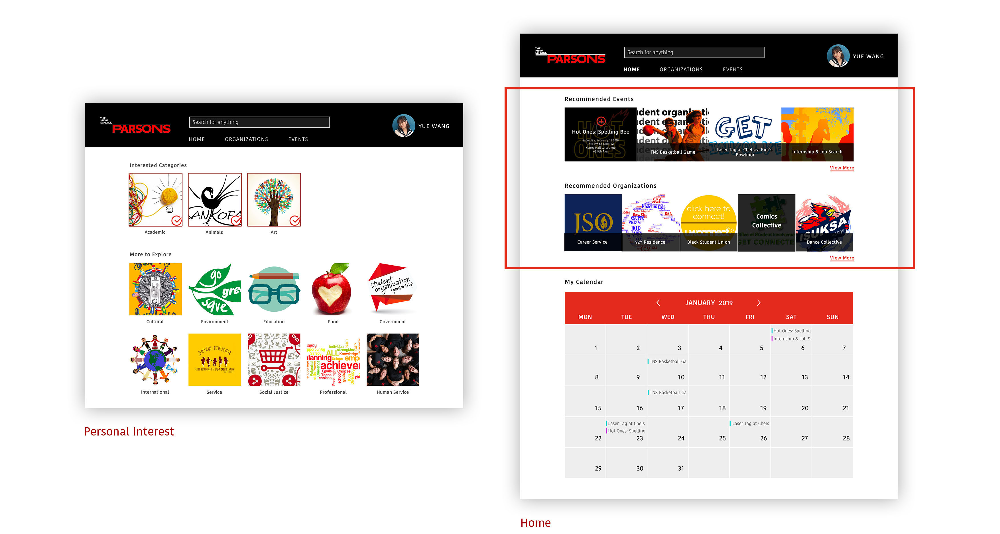
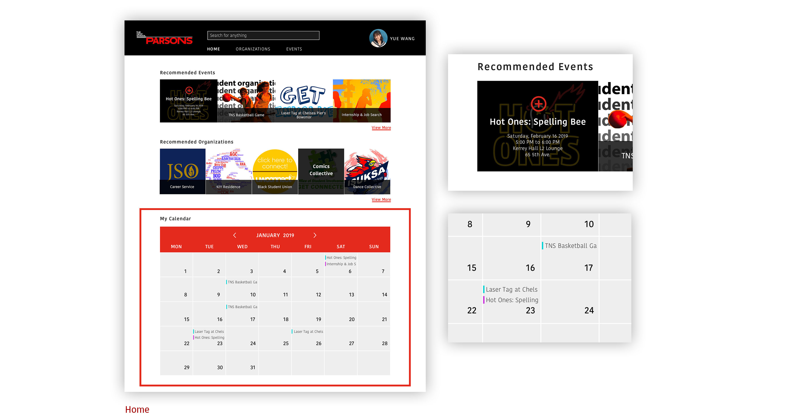
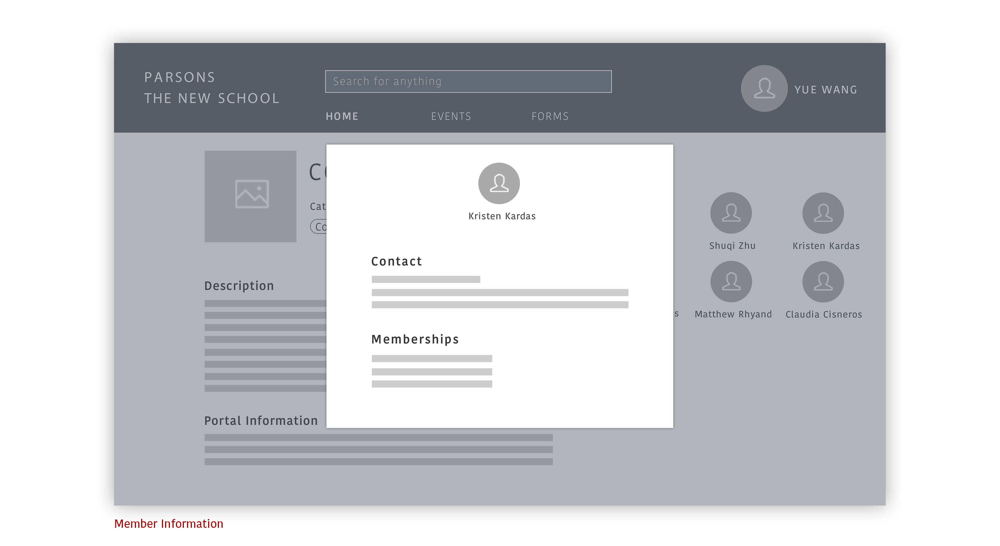
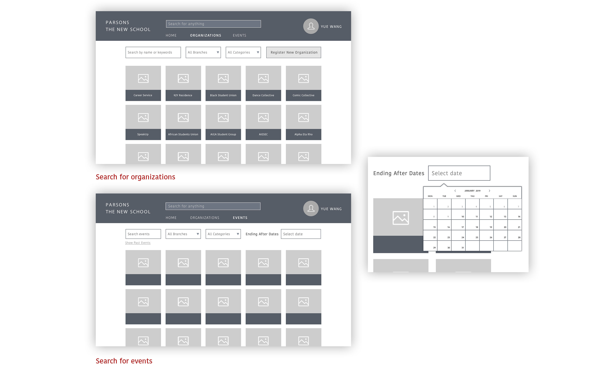

This is a website designed for Parsons The New School's new students to browse, search, and propose student organizations and events.
Student organization can be a good place for students to build social relationships and learn new things. However, it sometimes is hard for new students to find information about student organizations and events. After interviewing 10 students in Parsons School of Design, I found out that there are several problems:
· Many students who have studied for one or two years do not know much about school's student organization website.
· Most of students use facebook pages or paper posters to get information when they were new students.
· Some student organizations have their own websites to post events and news, which are hard for new students to find.
By interviewing students and comparing school's website with facebook, I found that students have the following needs when they were searching for information of student organizations:
· New students need reviews about organizations and previous events to provide more information from old students who have attended the events before and help them decide if they want to join or not.
· They want more recommendations so that they do not have to search for all the organizations and events.
· They want a place to show all the events they want to attend to better arrange their time.
· Social function is important: new students need to have a way to talk to old students and make friends.
· Students especially new students need a place to see all student organizations in one place and see new and previous events to compare and decide if they are interested in the organizations or events.
Based on the research above, my website has the following functions:
· Students could choose their interested categories to have recommended organizations and events on their home page.
· In the event details page, students could see all the information and reviews of people who attended the events before.
· There is a calendar on the home page for students to see their upcoming events.
· Students could find personal information and contact on member's information page to talk to people they want.
· Students could search organizations and events based on categories, branched and time.
The event detail page shows all the information and reviews of students who attended the events before to provide more information to new students.
Students could choose their interested categories on the personal interest section to have recommended organizations and events on their home page.
The calendar on the home page shows upcoming events that students have already signed up. Students could also click the red button on the events of the recommendation part above to quickly add events to their calendar.
The personal contact information such as email and phone number could be found on the personal information page.
The organization and event sections could provide all the organizations and events. Students could search based on names, branches, categories and time.